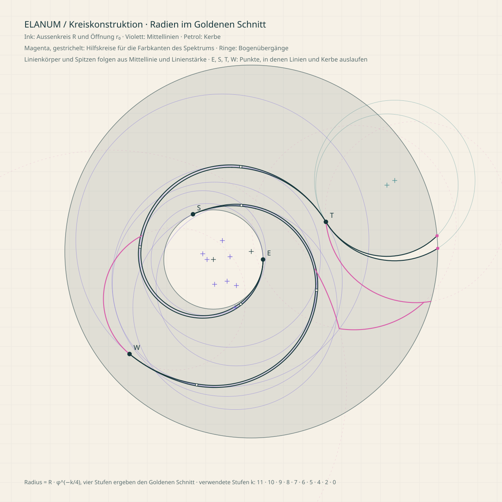

Rückzug
Du brauchst mehr Raum für dich.
Keine energetischen Deutungen. Kein Urteil.
Mit ELANUM findest du zu dir, zueinander und miteinander. Resonanz zeigt den Weg. Klar in der Form, offen für das, was Menschen verbindet.
Beziehungen erleben
01 · Haltung
Resonanz entsteht nicht durch Verschmelzung. Sondern im Dazwischen.
Offene Flächen geben Inhalt und Menschen Raum.
Kreis, Öffnung und Verbindung machen Zusammenhänge sichtbar.
Farbe kennzeichnet einen Bereich oder einen Moment, nie einen ganzen Menschen.
Eine warme Fläche bewahrt persönliche Gedanken. Sie bleibt die Ausnahme.
Alles beginnt im Resonanzkosmos mit dem Resonanzrad und seinen neun Elementen. Datingkosmos und Erlebniskosmos stehen gleichwertig daneben.
Resonanz in dir, in deiner Partnerschaft und in deinem Umfeld. Der Einstieg in ELANUM.
Resonanzrad · Heute · Weg · Umfeld · Beziehungsraum
Finde die eine Resonanz. Hier geht es nur ums Dating.
folgt
Resoniere mit anderen. Events, unabhängig vom Dating.
folgt
02 · Das Zeichen
Das ELANUM-Zeichen bleibt, seine Konturen sind neu konstruiert. Jede Rundung ist ein Kreisbogen, alle Radien stammen aus einer Reihe im Goldenen Schnitt, und jeder Bogen geht ohne Knick in den nächsten über. Die feinen Linien sind überall gleich stark und laufen in kurzen Spitzen aus. Seine Form bewegt sich nie, nur Licht und Farbe bewegen sich darin.
Spektrum · Goldener Schnitt
Blueprint zeigt alle Konstruktionskreise. Relief ist eine Materialanwendung, kein neues Zeichen. Als Marke in App und Atlas steht das Zeichen in Spektrum, auch klein. Ink nur, wo nur eine Farbe geht.
Ink · Goldener Schnitt ladenDie Form steht immer still. Licht und Farbe bewegen sich darin: einmal im Zeichenaufbau oder sanft und dauernd im Lichtlauf, gross wie klein. Pause und reduzierte Bewegung zeigen das ruhende Zeichen.
Einmal · knapp 3 s
Aussenkreis und Öffnung zeichnen sich als feine Linie im Markenspektrum, dann füllt sich das Zeichen sanft mit Farbe.
Dauernd · 24 s pro Umlauf
Ein weicher Glanz wandert im Kreis durch das Zeichen, wie der Glührand, nur langsamer. Die Farben bleiben.
Zeichen in Bewegung als eigene Seite
Die freien Bézier-Kurven des Originals hatten innerhalb einzelner Bögen schwankende Radien und Krümmungssprünge an den Übergängen. Die Kreiskonstruktion ersetzt sie durch Bögen mit festem Radius. Alle Radien stammen aus der Reihe R·φ^(−k/4): Vier Stufen ergeben genau den Goldenen Schnitt. Aufeinanderfolgende Bögen berühren sich tangential, ihre Mittelpunkte liegen mit dem Übergangspunkt auf einer Geraden.

03 · Beziehung
Jeder Kreis ist ein eigener Raum. Die Verbindung liegt dazwischen. Verändere Nähe, Resonanz und Freiraum.
Nah beieinander · spürbare Resonanz
Der Abstand ändert sich, die Kreise bleiben eigenständig.
Die Verbindung gewinnt an Präsenz, nicht die ganze Zeichnung.
Die Öffnung zeigt, was nicht abgeschlossen ist.
04 · Resonanzrad
Das Resonanzrad beschreibt dich. In der Mitte stehst du, darum liegen drei Bereiche mit je drei Elementen. Farbe heisst ausgefüllt. Grau mit Strich und Plus heisst offen: Dort kannst du ausfüllen.
05 · Farbe
Neutrale Flächen tragen die Marke. Drei Bereichsfarben ordnen das Resonanzrad. Statusfarben erklären, was gerade geschieht. Die drei Rollen bleiben getrennt.
Gleiche Helligkeit und angeglichene Sättigung in allen drei Bereichen, damit keiner dominiert. Tief trägt Schrift, die Fläche färbt ausgefüllte Elemente, eine Farbe für alle drei Elemente eines Bereichs. Der Hauch trägt den Ring. Offene Elemente sind grau.
Nur für das Zeichen und die Verbindungslinie zwischen zwei Menschen. Keine Fläche, keine Kategorie. Links das Zeichen im Lichtlauf.
Jeder Verlauf als kommaseparierte Liste seiner Farbstopps, zum Kopieren in Figma, CSS oder jedes andere Werkzeug.
Kräftige Rollenfarbe, Balken, Zeichen und Text. So unterscheidet sich ein Status immer von einem Bereich, auch ohne Farbe.
06 · Typografie
In einer App ist die meiste Schrift klein, schnell und bedienbar. Albert Sans trägt sie: grosse x-Höhe, Tabellenziffern, klar ab 15 px. Yrsa ist die persönliche Stimme und erscheint nur gross, ab 32 px. Kursiv gibt es nicht. Fünf Stufen, mehr nicht.
Raum für dich.
Display · Yrsa 400 · 52 / 96 px
Und füreinander.
Titel · Yrsa 400 · 32 / 48 px
Was bewegt dich gerade?
Überschrift · Albert Sans 600 · 20 / 22 px
Ein Gedanke, eine Pause, ein Austausch. Der Text bleibt ruhig und gut lesbar.
Text · Albert Sans 400 · 17 / 18 px
Nähe · spürbare Resonanz
Label · Albert Sans 500 · 15 px, das Minimum
07 · Material
Nicht alles braucht einen Rahmen. Abstand und Ausrichtung strukturieren die Oberfläche, Linien trennen nur Kapitel.
Licht kommt von links oben. Was man bedienen kann, hebt sich an. Eingaben liegen vertieft. Ein gespeicherter Gedanke wird zu einem Blatt Papier.
Du musst nicht jede Spannung sofort auflösen.
08 · Bedienung
Primär und sekundär unterscheiden sich durch Gewicht. Beim Zeigen hellt sich die Fläche auf, beim Drücken gibt sie nach.
Deine Angaben kannst du später ergänzen.
09 · Im Produkt
Das Resonanzrad zeigt dich. Heute, Weg und Umfeld gehören wie das Rad zum Resonanzkosmos. Alle nutzen dieselben Kreise und Linien.
Ein Gedanke, eine Pause, ein Austausch. Die Tageslinie ordnet Momente, ohne daraus einen Feed zu machen.
Ein Gedanke für dich.
Eine bewusste Pause.
Ein Moment mit Mara.
Noch offen.
Die Spur verbindet Erfahrungen bis zu dir. Danach folgt eine Unterbrechung: Was kommt, ist noch nicht gezeichnet.
Was dich bewegt, bekommt einen Namen.
Kleine Schritte im Alltag.
Du übst, was dir wichtig ist.
Der nächste Schritt entsteht unterwegs.
10 · In der App
So sieht ELANUM als App aus: dieselben Tokens, Bausteine und Regeln, gebaut vom Telefon her. Jeder Screen ist eine echte Seite, die du hier bedienen kannst. Vergleiche Telefon und Desktop oder zieh die Breite frei von 320 bis 1440 px.
Dieselben Ziele in jeder Breite. Die Form richtet sich nach dem Platz, nicht nach dem Gerät. Wo du bist, trägt den Glührand im Atemtakt; beim Wechsel gleitet er zum neuen Ziel. Oben links steht immer das ELANUM-Zeichen in Spektrum, mit Lichtlauf; beim ersten Start baut es sich auf.
Wie in der heutigen App bleiben Resonanz, Dating und Erleben getrennt. Gewechselt wird bewusst: über das Menü oder die Seitenleiste.
Für jeden neuen Screen. Geprüft wird auf 360, 390, 834, 1280 und 1440 px.
Navigation und Hauptaktion stehen unten, erreichbar mit einer Hand. Ab 600 px wandert die Navigation nach links.
Pro Screen ein Hauptmoment in weichem Licht, in der Farbe seines Bereichs, und eine primäre Handlung. Dunkel ist nur das Dazwischen: der Beziehungsraum. Auf dem Telefon schweben die Handlungen über der Leiste.
Auch in der Leiste. Was nicht passt, kommt ins Menü, nie kleiner. Keine Versalien als Ersatz für Grösse.
Mindestens 44 px, in Leiste, Kopf und Sheet 48 px. Abstand zwischen Zielen statt Linien.
Kurzes öffnet sich von unten, auf dem Tablet in der Mitte, auf dem Desktop von rechts. Immer mit Schliessen und Esc.
Was man berührt, antwortet: Der Tag zeichnet sich bis jetzt, eine Frage dreht sich um, bei Resonanz rücken zwei Kreise zusammen. Auswahl und Listen haben ein ruhiges Ende. Keine Zähler, keine Serien, kein Konfetti.
Wischen, Ziehen und Drehen sind eine zweite Eingabe, nie die einzige. Rückgängig geht immer.
Karten und Spalten richten sich nach dem Platz im Inhalt (Container Queries). Safe Areas und dynamische Höhe für Telefone mit Kerbe.
Vergleichbare Plattformen und neue Konzepte, geprüft an der Haltung von ELANUM. Übernommen wird, was beim Wählen hilft. Was zum Weitermachen belohnt, bleibt draussen.
Hinge
Wer Resonanz zeigt, wählt eine Frage oder ein Element, nicht einen ganzen Menschen. Das gibt dem ersten Satz einen Anlass.
Once, The League
„Drei Menschen für heute“ statt eines Stapels. Danach ein ruhiges Ende, morgen kommen neue.
Co-Star, The Pattern
Text zuerst, ruhige Typografie. „Wo es schwingt“ und „Hier seid ihr unterschiedlich“ statt Prozenten. Icons tragen immer einen Namen.
Headspace, Stoic
Ein Satz pro Tag, eine Tageslinie vom Ankommen bis zur Ruhe, eine Notiz auf Papier. Langsame Übergänge, nichts drängt.
Timeleft, Luma, Partiful
Menschen sichtbar vor der Zusage, Antwort in natürlicher Reihenfolge: Dabei, Vielleicht, Nicht dabei. Der Ort kommt am Vortag.
Material 3, Apple
Leiste, Schiene und Seitenleiste mit denselben Zielen. Sheets mit Griff, Schliessen-Knopf und Esc, Kopf mit grossem Titel, der beim Scrollen klein wird. Weiche Übergänge zwischen Screens (View Transitions).
Was bleibt, was sich ändert. Grundlage ist die App unter soulresonance.ch, Stand Oktober 2026.
Die Namen der Ziele Entdecken, Likes, Chats, Profil, Aktivitäten, Events, Meine und Menü stammen aus der heutigen App und stehen noch nicht im Glossar. Ebenso App-Rahmen, Leiste, Schiene, Seitenleiste, Sheet, Hauptfläche, Tagesbogen, „Eine Frage für heute“ und „Resonanz zeigen“.
11 · Bausteine
Alle Darstellungen gibt es als eigene Seite, zum Prüfen, Zeigen und Weiterbauen. Sie nutzen dieselben Tokens und denselben Code wie dieser Atlas.
Dieselben Masse für Rad, Umfeld, Beziehungsraum, Weg und Tageslinie.
24er-Raster, 1,6 px, runde Enden, keine Füllung. Kreise, Öffnungen und Verbindungen wie im Zeichen.
12 · Bewegung
Bewegung zeigt, wie etwas funktioniert: Kreise rücken zusammen, das Rad baut sich Bereich für Bereich auf, eine Spur zeichnet sich bis zu dir. Langsam im Ausdruck, direkt in der Bedienung. Die Form des Zeichens bewegt sich nie, nur Licht und Farbe bewegen sich darin.
Die Systemeinstellung für reduzierte Bewegung wird respektiert.
13 · Sprache
Rückzug
Du brauchst mehr Raum für dich.
Keine energetischen Deutungen. Kein Urteil.
Unterschied
Hier seid ihr unterschiedlich.
Keine Diagnose. Keine Bewertung von Kompatibilität.
Nähe
Ihr braucht nicht dasselbe, um euch nah zu sein.
Verständliche Beobachtungen statt Beziehungsscores.
Der Baustein Fliesstext unterstreicht die Kernaussage leise und setzt ans Satzende jedes Element, aus dem sie stammt. Antippen öffnet die Quellenkarte mit der Herleitung.
Du musst nicht alles im Voraus festlegen. Vieles entwickelt sich für dich aus konkreten Situationen und Begegnungen heraus. Wenn etwas Reales vor dir liegt, wird oft klarer, was sich wirklich stimmig anfühlt.
14 · Prüfung
0 / 10
Bestätigte Gestaltungsregeln. Eine Checkliste ersetzt kein visuelles Review.
15 · Glossar
Ältere Arbeitsnamen. Wo sie noch stehen, durch den neuen Begriff ersetzen.
16 · Assets & Tokens